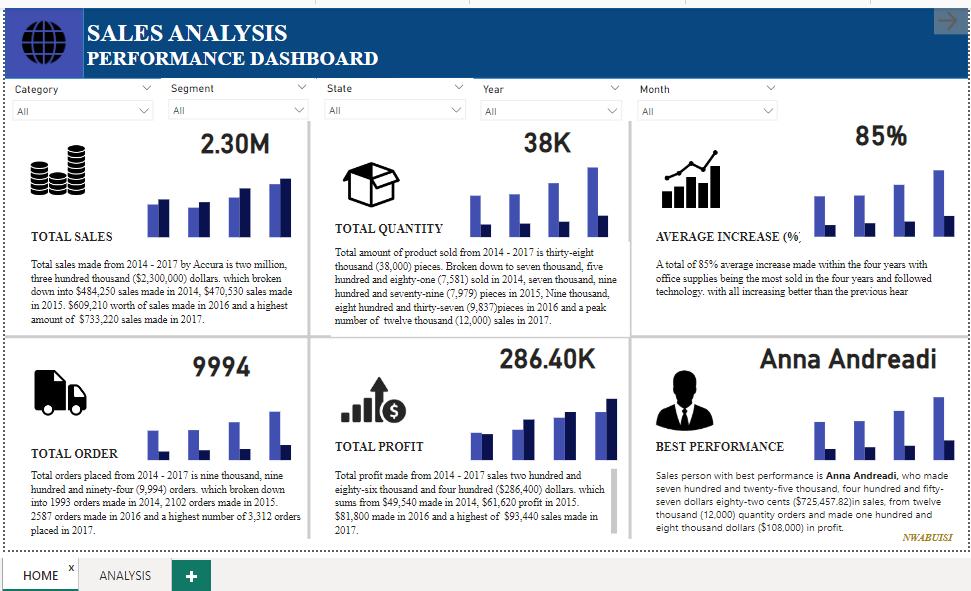

ABOUT ME
Nwabuisi Okechukwu
I am Nwabuisi Solomon Okechukwu, a BSc. holder in Computer Science, a data analyst, writer and an I.T. consultant. I work with firms, organizations or companies that are looking to make effective use of their data.
I accurately measure data, from the first set of idea surrounding it, through data cleaning, validation, presentation, analysis and representation in simple but authentic dashboards. Also, I indulge in a step-by-step rundown of my data analytics process, which helps come about adequate and solid decisions, sufficiently driven by KPIs (Key Performance Indicators). I am well conversant with tools like Microsoft Excel, Structured Query Language (SQL), Python and Cognos Analytics,.
I offer consultations on an in-depth inquiry, assessment and knowledge on every aspect of Information Technology (I.T.). I am a skilled and professional writer, with proficient knowledge on the proper use of English language and I.T. jargon. I find solace in poetic writing and expertly tell data-related stories and technical writing.
I offer Consultations on every aspect of Information Technology, especially data related. Also, I am an efficient writer, which aids my data story telling, technical writing with proper use of english language and respective field jargons. I find solace in poetic writing and conversations about writings revolving conventional use of figures of speech.
I am available for immediate, short term and long term projects and part-time or full-time commitment is guaranteed.
PORTFOLIO
Welcome to my Data Analytics Portfolio Projects! In this collection of projects, I showcase my passion for extracting valuable insights from data. Through a blend of data wrangling, visualization, and statistical analysis, I've tackled real-world problems and uncovered meaningful patterns. Each project demonstrates my ability to transform raw data into actionable recommendations with the use of different tools and drive data-driven decision-making. Explore these examples to see how I leverage the power of data to solve complex problems and inform strategic choices.
VRINDA STORE ANALYSIS WITH EXCEL
Analysis on 2022 sales, made byVrinda Store; an Indian based clothing business that drives sales mostly on e-commerce platforms such as amazon, customers are solely male and female, ranging from the age of 18-78 years old from different locations. After the 2022 business circle, a crystal decision making objective has been drawn to...
2021/22 ROAD ACCIDENT ANALYSIS WITH EXCEL
A diagnostic and prescriptive analysis on a 2021 and 2022 Road Accident Dataset, to find out why road accident happened in 2021/22 and what should be done to reduce the occurrence of accidents and its casualties. Analysis on 2021 and 2022 data on Road accident, also termed traffic collision or motor vehicle collision (car crash in case cars are involved in the collision), is defined by Wikipedia as “ an occurrence...
H. R. EMPLOYEES ANALYSIS USING POWERBI AND EXCEL
A detailed analysis on a H.R. dataset to find out employees that have not been promoted for the past ten (10) years so they’d get promoted, to lay-off those that have spent eighteen (18) years and above, Those who live close/far from place of work, and those who are both due for promotion and due for lay-off for compensation (Golden handshake).

SALES PERFORMANCE ANALYSIS USING POWER BI
A store that deals on sales of furniture materials, office supplies and technological materials, collected 2014, 2015, 2016 and 2017 sales data to be analyzed for trends and performance analysis, to gather favorable insights that can help push the ...
SERVICES

Data Analytics
With the high increase in daily data influx, I make use of dynamic and diverse data set to analyse, compute and present dashboards that assist in investigation, discovery, interpretation, decision-making, communication of vital patterns in data and well detailed data storyteling. with the use of tools like Microsoft Excel, Microsoft PowerBI,Cognos Analytics and Python.
IT Consultation
With my vast knowledge in Computer Science and its related fields, I counsel clients on plan, design and installation of information technology systems suitable for their specialty, to help meet their respective objectives and attain layed down goals. Also, i offer one-on-one paid guidance to people facing dilemma with different spheres of tech, but dearly want to get into information technology through steps to take. these decisions are made after analysing their soft skill. BOOK A SESSION HERE.
Writer
I write process and user documentations for firms, perform detailed research, aid and guide tertiary students on project writing ; at my leisure, I engage in Poetry writing. To get weekly articles from me regarding Technology, Life misconceptions and Poems sometimes, you can subscribe to my weekly newsletter HERE.
MY SKILLS
The basic skill a data analyst should have is analytical thinking. Just as Stefanovic said in 2022, "being analytical means applying logical reasoning to find out more about something".
Alongside analytical thinking, I make use of different kinds of tools to effectively analyze data, clean and present eye-catching dashboards, tools such as, blah blah. The aforementioned tools have I mastered with different perfection rates which has been illustrated below.
As they say, 'learning is a continuous process', so do I practice and constantly develop my skills to enable me deliver better and wonderful outputs in my career as a data analyst.
Excel: Pivot tables, pivot charts, conditional formating, duplicates manipulations, functions (Logic, boolean, condition...), dashboarding et, al.
Power BI: M language, power query, conditional formating, Dax, model, dashboarding et, al.
SQL: Create Database, Create tables, execute queries using Structured query statements, et, al.
Python: NumPy, Scipy, Pandas, Matplotlib, Seaborn, Scikit-Learn et al.
Excel
Power BI
SQL
Python
CONTACT